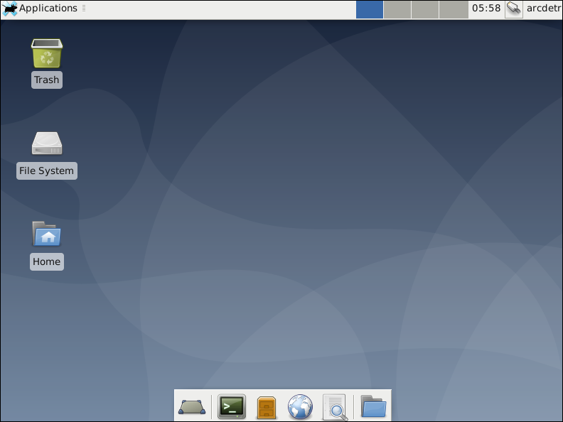

September 11, 2019
Install Debian 10 XFCE
Here is how to install Debian 10 "Buster" on a computer that was previously running Windows. This process will completely overwrite your Windows operating system and all your files. Various options are available in the Debian installer. For improved performance, this post chooses XFCE desktop. For extra privacy, disk encryption is selected during the install.
Get Ready
Before you begin the installation, you will need:
- A USB memory stick of at least 4 GB. (You can alternatively use a writable DVD if your computer has a DVD drive.)
- Download the ISO file for the first DVD for Debian from the Debian website. It is almost 4 GB in size.
Normally you need only the first DVD ISO. You can install any extra packages you need from the repositories after your initial installation.
- Download and install a tool such as balena Etcher for creating a bootable USB stick from an ISO file.
- Use your tool (e.g. balena Etcher) to burn the ISO file to the USB memory stick.
Boot from Installer
Once you have the bootable USB stick, insert it into your computer. Power on the computer. You may need to enter the machine's BIOS (UEFI) on start-up to get it to boot from a USB stick. This often requires that, during the computer's power-on self-test (POST), you tap a key such as DEL, F2, F12, or some other key. The key to tap depends on your computer manufacturer and model.
The Debian installer then launches.
Step through Debian Installer
- The first screen offers you a choice between Graphical install, Install, Advanced options, Accessible dark contrast installer menu, Help, and Install with speech synthesis. Select the default of Graphical install, and press Enter on your computer keyboard.
- On the next screen, select the language for the installation process, for example, English. When you have made your choice, click Continue.
- Select your location, for example, Hong Kong. When you have made your choice, click Continue.
- Next, choose your keyboard layout, for example, American English. and click Continue.
- The installer attempts to configure your networking. It then asks for a name for this system. Enter a name of your choice, such as
host. Click Continue.
- For a domain name for a home system, you can enter a name of your choice, such as
network.home. Click Continue.
- Enter a root password twice, and click Continue.
- Enter an account name for a non-root user, for example,
arcdetri, and click Continue.
- Enter a username for the non-root user, for example,
arcdetri again, and click Continue.
- Enter a password for the non-root user twice, and click Continue.
- For the partitioning method, select Guided - use entire disk and set up encrypted LVM. Click Continue.
- Select the disk to partition, and click Continue.
- Select All files in one partition (recommended for new users). Click Continue.
- When you are asked if you want to write these changes to disk, remember that your entire Windows system and files will be erased. Assuming you understand this, select the radio button for Yes, and click Continue.
- The installer overwrites the disk with random data. Depending on the size of your disk, this can take a while.
- Enter a disk encryption password twice, and click Continue.
- Assuming you want to use your full disk, leave the volume group at full size, and click Continue.
- When asked if you want to finish partitioning and write changes to disk, click Continue.
- When you are asked if you want to write these changes to disk, select the radio button for Yes, and click Continue.
- The base system is now installed, including Linux kernel version 4.19.
- When asked if you have another DVD to scan, select No, and click Continue.
- When asked if you may want to use a network mirror for additional packages, select Yes, and click Continue.
- Select a mirror close to you, for example, Hong Kong. When you have made your choice, click Continue.
- Unless you know better, leave the default archive mirror selected, and click Continue.
- Unless you have a proxy server, leave HTTP proxy information blank, and click Continue.
- When you are asked if you want to participate in the package usage survey, select the radio button for No, and click Continue.
- On the software selection screen, uncheck all boxes. Then check only XFCE and standard system utilities. Click Continue.
- When the system has been installed, you are asked if you want to install the GRUB boot loader. Select Yes, and click Continue.
- Select your hard disk device, and click Continue.
- At the end of the installation, you are prompted to remove the installation media (USB or DVD), and click the button Continue.
First Boot
The Debian machine now boots for the first time.
You will need to enter the disk encryption password before the boot process can proceed.
Once the boot is done, you are prompted to enter your username (e.g., arcdetri) and the password you chose during installation. Click Log In.
On the first start of the panel, click Use default config.
The XFCE desktop appears.

Add Yourself to the Sudo Group
Open the terminal emulator. You can either do this from the Application > Terminal Emulator menu item, or from the terminal emulator icon at the bottom of the screen.
Switch to the root user:
su -
Add your non-root user to the sudo group by issuing the command:
usermod -a -G sudo username
replacing username by your non-root user name.
Exit your session as root:
exit
Close the terminal emulator. Log out by clicking on your username at the top right of the screen, and selecting Log Out. Select Log Out again on the next screen.
Now log back in as your non-root user. By logging out and logging back in, your membership in the sudo group becomes effective.
Update System
Open the terminal emulator from the Application > Terminal Emulator menu item or from the terminal emulator icon at the bottom of the screen.
Edit your package sources list:
sudo vi /etc/apt/sources.list
Location any lines marked deb cdrom. Use the editor command dd to delete any such lines. Write the file to disk and quit the editor with the commands:
:wq
Update the system by issuing these commands:
sudo apt update
sudo apt upgrade
Install Firewall
We will set up the firewall to block all unsolicited input. Install and start the firewall:
sudo apt install nftables
sudo systemctl enable nftables
sudo systemctl start nftables
Delete the existing input chain:
sudo nft delete chain inet filter input
Add back the input chain with a default policy of drop:
sudo nft add chain inet filter input { type filter hook input priority 0\; policy drop\; }
Add rules to accept related and established traffic, and also all traffic on the loopback interface:
sudo nft add rule inet filter input ct state related,established counter accept
sudo nft add rule inet filter input iif lo counter accept
Persist your nftables rules:
sudo su -c 'nft list ruleset > /etc/nftables.conf'
Close the terminal emulator .
Improve Privacy of Firefox
We will now harden the security options on Firefox. Open Firefox either from the Applications > Web Browser menu item, or from the Web Browser icon at the bottom of the screen.
Click the Firefox hamburger menu, and select Preferences.
- On the General page:
- Set Firefox to start with a blank page.
- On the Search page:
- Uncheck Provide search suggestions.
- On the Browser Privacy page:
- Uncheck the option to save logins and passwords for websites.
- Set the History option to never remember history.
- This causes Firefox to restart. When it has restarted, resume changing the preferences.
- Set Firefox to accept third-party cookies and site data Never.
- Uncheck all the Address Bar suggestions.
- Set Tracking Protection to Always.
- Uncheck all options for Firefox Data Collection and Use.
- Uncheck all options for Deceptive Content and Dangerous Software Protection, since this may send out data on the Internet.
Disable WebRTC:
- Enter
about:config in the address bar, and press Enter.
- Click the button I accept the risk.
- Type
media.peerconnection.enabled in the search bar, and press Enter.
- Double-click the row for
media.peerconnection.enabled. The value changes from true to false.
- WebRTC is now disabled in Firefox.
Install uBlock Origin and Privacy Badger add-ons:
- Click the Firefox hamburger menu, and select Add-ons.
- Find more add-ons.
- Search for
ublock origin.
- Add to Firefox uBlock Origin by Raymond Hill.
- Click Add.
- Click OK.
- Search for
privacy badger.
- Add to Firefox Privacy Badger by EFF Technologists.
- Click Add.
- Click OK.
Close Firefox once you are done configuring it.